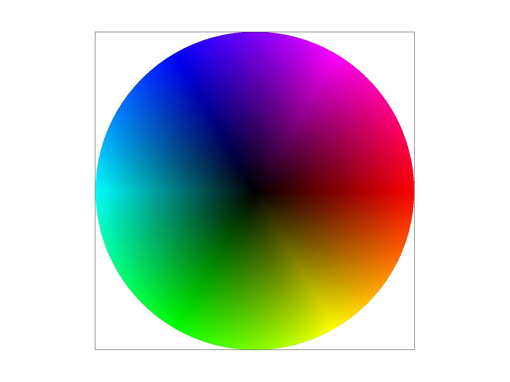

UC BERKELEY · FALL 2026
Computer Graphics and Imaging

Triangle rasterization, supersampling, transforms, and texture filtering.
Bézier curves and surfaces, half-edge mesh operations, and subdivision.